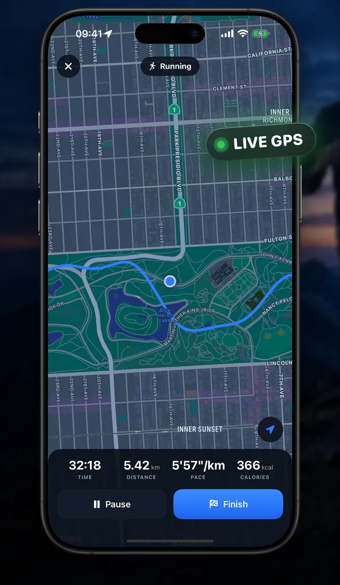
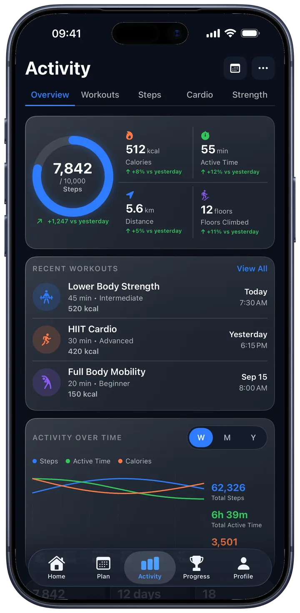
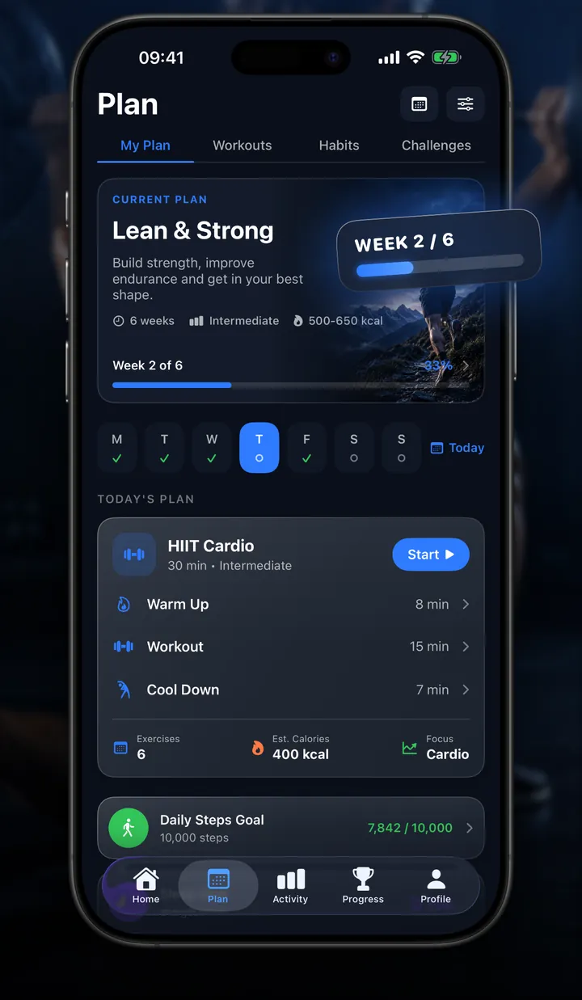
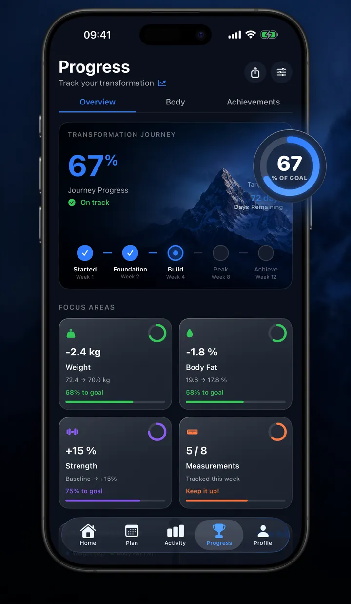
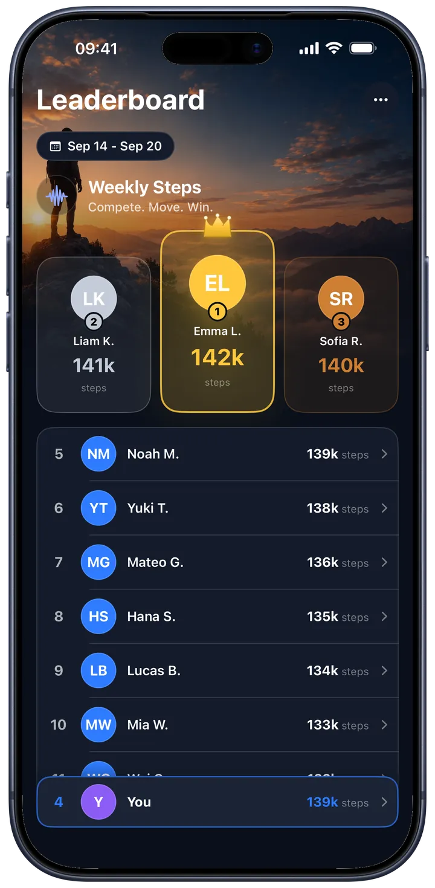

Steps, routes, workouts and progress, from the data your iPhone and Apple Watch already record in Apple Health.

GPS walks and runs
Track every route
Start a walk or a run and Luris draws your route on the map as you go, with live time, distance, pace and calories.
Tracking keeps going with your iPhone locked
A Live Activity shows the session on the Lock Screen and in the Dynamic Island
Finished walks and runs are saved to Apple Health as workouts

Steps and activity
Your week in motion
A ring for today's steps, with calories, active minutes, distance and floors beside it. The Activity tab turns your week into trends and lists your recent workouts.
Steps and distance come straight from Apple Health
Set your own daily step goal
See how today compares with yesterday

Weekly plan
Train with a plan
Luris builds a six week plan around the training days you choose, then lays out each session as a warm-up, the workout and a cool-down.
Workouts drawn from 873 exercises bundled with the app
Today's session waits for you on the Home tab
Completed workouts are saved to Apple Health

Progress
Progress you can see
Follow your weight and body fat from Apple Health on clear trend charts, add progress photos, and unlock badges as you reach new milestones.
Progress photos stay on your iPhone
49 badges for steps, distance, workouts, streaks, floors and calories
Streaks count the days you reach your step goal

Weekly leaderboard
Climb the ranks
Join the weekly steps leaderboard in Game Center and see where you stand against everyone taking part. It starts over every week, so there is always a fresh race.
Joining is optional, and you appear under your Game Center alias
Luris shares one number: your step total for the week
Leave at any time from the leaderboard menu
Also in Luris
The details that keep you moving
Apple Health at the core
With your permission, Luris reads steps, distance, energy, heart rate, sleep and body metrics from Apple Health, and saves the workouts you finish back to it.
Steps widget
Today's steps, your goal and your streak on the Home Screen or the Lock Screen, without opening the app.
Live Activity
A walk or run in progress stays on the Lock Screen and in the Dynamic Island, with the timer, distance and pace.
873 exercises
A library of exercises with step by step instructions ships inside the app and supplies every workout in your plan.
Achievements
Badges for lifetime steps, big days, distance, workouts, active minutes, streaks, floors and calories.
Your units, your language
Kilometers or miles, kilograms or pounds, picked from your region and changeable in Profile. Luris speaks 16 languages.
Privacy
Your health data stays on your iPhone
Luris runs no servers of its own. Your workouts, routes and progress photos are stored on your device.
No account needed
There is nothing to sign up for. Sign in with Apple is optional and only used to greet you by name.
No ads, no analytics
The app contains no third-party tracking libraries, and your health data is never used for advertising.
One number on the leaderboard
If you join, Luris sends Game Center your weekly step total and nothing else. If you never join, nothing is sent.